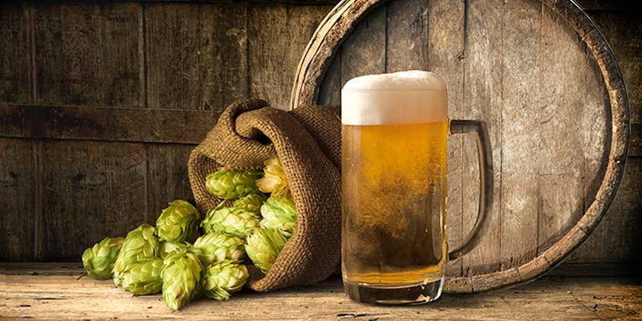

Brew your own beer!

This special beer recipe is something I've actually never tried before!
This extract recipe provides the basic building blocks of a tasty American Pale Ale. The 6-row pale malt provides a nice grainy character and the crystal provides some caramel sweetness and smooths out the mouthfeel. The hop schedule consists of two of the American classics and is designed to balance bitterness, flavor and aroma. This recipe is designed for the new homebrewer, and can be made with the most basic equipment setup. You can find dry light malt extract, crystal 20L malt, American 6-row malt, Cascade and Centennial hops and Safale US-05 yeast at any homebrew shop. You will need to have the grain crushed. Most homebrew stores sell pre-crushed grain or they can crush it for you on site.
I brewed this in my apartment kitchen. It fermented in a plastic bucket for 12 days at a temperature around 68°F. The finished product looks really nice in the glass. It's a cloudy pale-orange color with a dense white head, and leaves nice lacing. The nose has orangey citrus notes and a hint of caramel. The flavor follows the aroma; this is an easy-drinking pale ale with a little citrusy sweetness and a balancing bitterness.
Ingredients:
- 5 1/2 pounds dry light malt extract
- 1/2 pound Crystal 20L malt, crushed
- 1/2 pound American 6-row malt, crushed
- 1/2 ounce Centennial hops
- 2 ounce Cascade hops
- 1 1/2 ounce Centennial hops
- 6 gallons of tap water, split. If possible, place 3 gallons in the refrigerator to cool in a sanitized container
- 11.5 gram package Safale US-05
Directions:
- Tie the American 6-row malt and Crystal 20L malt in a mesh hop-bag. Heat 1 gallon of water in a large pot to 160°F and remove from heat. Add malt and let steep for 20 minutes.
- Raise temperature slowly to 170°F. Make sure mesh bag isn’t sitting directly on the bottom of the pot. Remove the grain bag and add water to make 3 gallons total.
- Bring the wort to a vigorous boil. As water is heating, slowly add malt extract, stirring constantly until completely dissolved. When boil begins, add 1/2 ounce Centennial hops in mesh bag.
- After 45 minutes of boiling has passed, add 1 ounce Cascade and 1 ounce Centennial in mesh bag.
- After total of 60 minutes of boil remove from heat, add 1 ounce Cascade and 1/2 ounce Centennial in mesh bag and cover. Warning: After wort cools below 180°F everything that touches it should be sanitary, and exposure to open air should be limited as much as possible.
- Cool wort by placing pot in ice bath until it is below 85°F. Transfer to sanitized fermentor (either a carboy or a fermentation bucket). Top off to 5 gallons using refrigerated water.
- Sanitize outside of yeast package, fermentation stopper and airlock. Carefully pour yeast into cooled wort (it should be below 70°F), and agitate vigorously. Ferment in dark place, keeping ambient temperature consistent, preferably between 62-66°F.
- Bottle after two to three weeks.